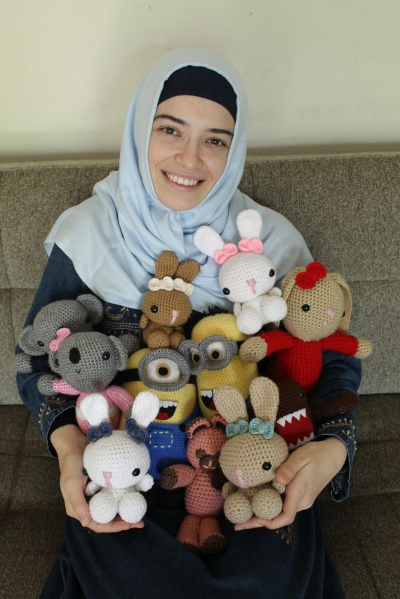

Who am I?
 Let me tell you a little about me. I am Zeynep. I have been crocheting since June 2010; so I have a whole decade of experience with Amigurumi dolls. I enjoy this hobby a lot. Crocheting amigurumis and taking their pictures are so much fun! I will share my crochet and knitting adventures with you as much as possible. I hope you will enjoy my posts. Let’s get started!